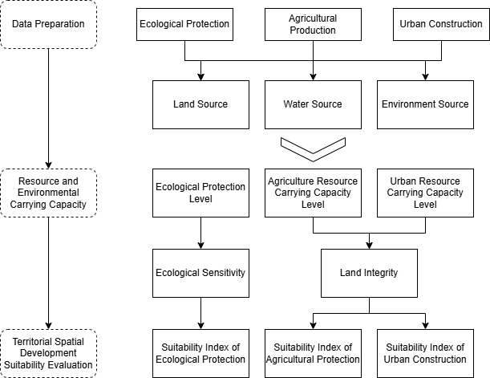
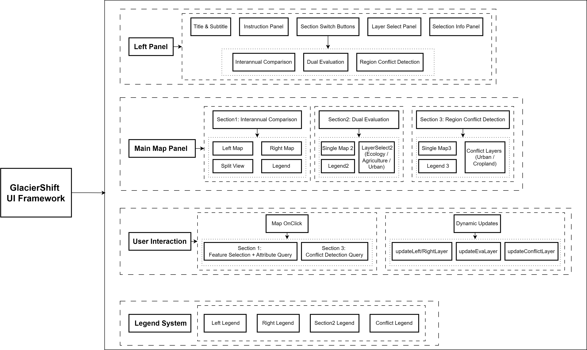

GlacierShift: Mapping Glacier-Affected Regions
Exploring Glacier Change and Conservation Planning across the Qinghai-Tibet Plateau
1 Project Summary
Driven by global warming, widespread glacier retreat across the Qinghai-Tibet Plateau poses significant threats to ecosystems and water resources.
This project maps glacier-affected regions from 2000 to 2020, aiming to assess glacier changes and their implications for conservation planning. Integrating multi-source datasets, the project classifies glacier-impacted areas and conducts protective planning analysis aligned with Chinese national standards.
The findings support ecological protection efforts and inform municipal-level spatial planning, assisting governmental planners in making informed land-use decisions and monitoring ecological changes for sustainable conservation strategies.
1.1 Problem Statement
- Background
Glacier retreat across the Qinghai-Tibet Plateau threatens both ecological stability and water security, further challenging traditional spatial planning frameworks.
Despite recent policy advances, current planning practices still overlook the changes induced by glacier retreat, leading to gaps in conservation planning.

- Research Question
To address these challenges, this project seeks to answer the question:
What spatial impacts have glacier changes on the Qinghai-Tibet Plateau had on the regional ecosystem and territorial spatial planning?
Based on this, the project develops a spatial tool that maps glacier-affected regions and integrates glacial change indicators into municipal-level spatial planning to support adaptive governance.
1.2 End User
Who are we building for?
Local Governments: To obtain city-level glacier impact summaries and detect spatial planning conflicts.
Environment Agencies: To monitor the cascading effects of glacier retreat.
Research Institutions: To access dynamic glacier data and models.
Public: To enhance awareness of glacier protection.
Construction Companies: To avoid site selection in areas affected by glacier changes.
What needs does it address?
Governments and agencies need tools to support adaptive spatial planning and risk mitigation.
Researchers require reliable glacier data for scientific modeling.
The public benefits from increased awareness and educational outreach on environmental changes.
Construction sectors need early warnings and site selection guidance to minimize future risks.
1.3 Data
This project utilizes a range of geospatial and environmental datasets to assess glacier changes and support spatial planning analysis. The datasets, sourced from public Earth observation platforms and third-party research institutions, include glacier boundaries, temperature records, vegetation indices, elevation models, administrative boundaries as well as other related dataset.
| Data | Asset | Sources |
|---|---|---|
| Glacier Boundary | GLIMS/20230607 |
GLIMS2023 |
| Glacier Change | Third party dataset | SEDOO |
| Temperature (2000-2014) | Third party dataset | TPDC |
| Temperature (2015-2020) | Third party dataset | worldclim |
| NDVI | MODIS/061/MOD13A2 |
MOD13A2.061 |
| Waterbody | JRC/GSW1_4/YearlyHistory |
JRC |
| Digital Elevation | NASA/NASADEM_HGT/001 |
NASADEM |
| SoilGrids | projects/soilgrids-isric/layer_name |
ISRIC |
| Precipitation | UCSB-CHG/CHIRPS/DAILY |
CHIRPS |
| PM2.5 | projects/sat-io/open-datasets/GLOBAL-SATELLITE-PM25/ANNUAL |
gee-community-catalog |
| Natural Ecological Resource Data | Third party dataset | TPDC |
| Basin Boundary | WWF/HydroATLAS/v1/Basins/level06 |
WWF |
| Tibet Plateau Boundary | Third party dataset | TPDC |
| Chinese Municipal Boundary | Third party dataset | tianditu |
1.4 Methodology
- Defining Glacier-Affected Regions
Based on published study (Zhang et al., 2016), calculating Relative Glacier Meltwater Contribution (RGMC) to identify cities influenced by glacier melt-water.
\[ \text{RGMC} = 7.22 \times \left( \frac{\text{Glacier Area}}{\text{Basin Area}} \right)^{0.61} \]
- Environmental Data Processing and Analysis
Glacier Retreat Indicators: NDVI (vegetation regrowth as a proxy for glacier retreat) and Temperature (warming trends) were analyzed using GEE datasets.
- Spatial Suitability Zoning
Integrated “Dual Evaluation” framework (national guideline) while adding glacier melt-water into analysis.

- Conflict Detection and Visualization
Automatic detection of the spatial conflict between the recalculated land use within the glacier-affected area and the current land use. Provide decision-makers with municipal summaries and structured outputs.
1.5 Interface
The application’s interface supports spatial planners, policy stakeholders, and researchers in integrating glacier-related environmental changes into spatial governance.
The control panel provides commands, module switching, layer selection, year sliders and dynamic attribute tables. The map area supports dual synchronised maps, single map evaluation and conflict detection modes.
Users can compare environmental changes from 2000 to 2020, switch among Interannual Comparison, Dual Evaluation, and Conflict Detection modules, and click glacier-affected areas to retrieve attribute tables or query conflict zones.
Adaptive legends automatically update, ensuring clarity and supporting modular exploration and decision-making.
2 The Application
Warning: Users need to register and log in to GEE to obtain the loading of data
3 How it Works
The application is built using the Google Earth Engine (GEE) JavaScript API. It integrates modular components for style definition, data processing, dynamic visualization, user interaction, querying, and spatial conflict detection.

3.1 Data Preparation
Study regions and glacier-affected areas are defined through FeatureCollections:
var defaultRegion = ee.FeatureCollection("projects/casa0025geeappglaicier/assets/boundary/zone_clip");
var boroughRegion = ee.FeatureCollection("projects/casa0025geeappglaicier/assets/boundary/borough_en");Time-series datasets for glaciers, temperature, NDVI, and water bodies are loaded dynamically:
function getGlacierElevation(year) {
var assetPath = 'users/ixizroiesxi/glacier_sum/glacier_changes_' + year + '_3band';
return ee.Image(assetPath).select('b1').clip(defaultRegion);
}
function getTempByYear(year) {...}
function getNDVIImageByYear(year) {...}
function getWaterbodyByYear(year) {...}Conflict detection datasets are constructed by identifying intersections between ecological protection zones and land cover categories:
var built_up = TP_landcover.select('Map').eq(50);
var cropland = TP_landcover.select('Map').eq(40);
var conflict_urban = built_up.and(eco_zone);
var conflict_cropland = cropland.and(eco_zone);3.2 Dynamic Layer Visualisation
Environmental indicators are classified and mapped with specific colour palettes:
function getLayer(type, year) {
if (type === 'Glacier') {
var glacImg = getGlacierElevation(year).clip(boroughRegion);
var classified = glacImg.expression(
"b < -50 ? 1 : (b >= -50 && b < -20) ? 2 : (b >= -20 && b < 0) ? 3 : (b >= 0 && b < 20) ? 4 : (b >= 20) ? 5 : 0",
{ 'b': glacImg }
).selfMask();
return classified.visualize({palette: ['#bd0026', '#e31a1c', '#fd8d3c', '#88419d', '#4d004b'], opacity: 0.95});
}
// Similar logic applies for Temperature, NDVI, and WaterBody
}Suitability evaluation layers for ecology, agriculture, and urban development are loaded separately:
function getLayer2(type) {
if (type === 'Ecology') {
return ee.Image('users/ixizroiesxi/Slefixed').clip(defaultRegion).visualize({
min: 2, max: 3,
palette: ['#1db302', '#abff57'],
opacity: 0.8
});
}
// Agriculture and Urban similarly
}3.3 Split-Panel Map and Interactive Control
The app uses a split-panel to support side-by-side year comparison:
var leftMap = ui.Map();
var rightMap = ui.Map();
ui.Map.Linker([leftMap, rightMap]);Maps are dynamically updated according to selected year and layer:
function updateLeftLayer(type, year) {...}
function updateRightLayer(type, year) {...}Modules can be switched between interannual comparison, dual evaluation, and conflict detection by button clicks:
sec1.onClick(function () { ... });
sec2.onClick(function () { ... });
sec3.onClick(function () { ... });3.4 Region Query and Attribute Table
Clicking on a map triggers querying of the selected administrative region:
function handleMapClick(coords, mapSide) {
var point = ee.Geometry.Point(coords.lon, coords.lat);
var selected = boroughRegion.filterBounds(point).first();
...
}Statistics for each indicator (mean, min, max, change) are computed:
function queryGlacierInfo(feature, yearL, yearR) {...}
function queryTemperatureInfo(feature, yearL, yearR) {...}
function queryNDVIInfo(feature, yearL, yearR) {...}
function queryWaterBodyInfo(feature, yearL, yearR) {...}Differences between selected years are calculated as:
\[ \text{Difference} = \text{Value}_{\text{Right Year}} - \text{Value}_{\text{Left Year}} \]
3.5 Conflict Detection
In conflict detection mode, clicking a location assesses whether it falls within a conflict zone:
function setupConflictDetection() {
section3Map.onClick(function(coords) {...});
}Results are displayed in an attribute table indicating:
Urban-ecology conflict
Agricultural-ecology conflict
Using colour-coded labels (red for urban conflict, orange for cropland conflict, green for no conflict).
3.6 Automatic Legend Management
Legends for each data type are dynamically generated to match the active layer:
function updateLegend(type, panel) {...}
function updateLegendSection2(type, panel) {...}Conflict detection has a custom legend panel showing:
üèôÔ∏è Built-up conflict zones
üåæ Cropland conflict zones
3.7 Modular Architecture
Each module is independently initialised, ensuring flexible exploration:
| Module | Function |
|---|---|
| Interannual Comparison | Compare environmental changes (dual map) |
| Dual Evaluation | Explore ecological/agricultural/urban suitability |
| Conflict Detection | Identify land use conflicts |
The modular architecture of our GEE app ensures flexible exploration, spatial conflict analysis and practical support for decision-making in glacier-affected areas.